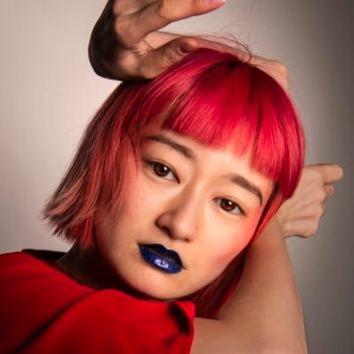
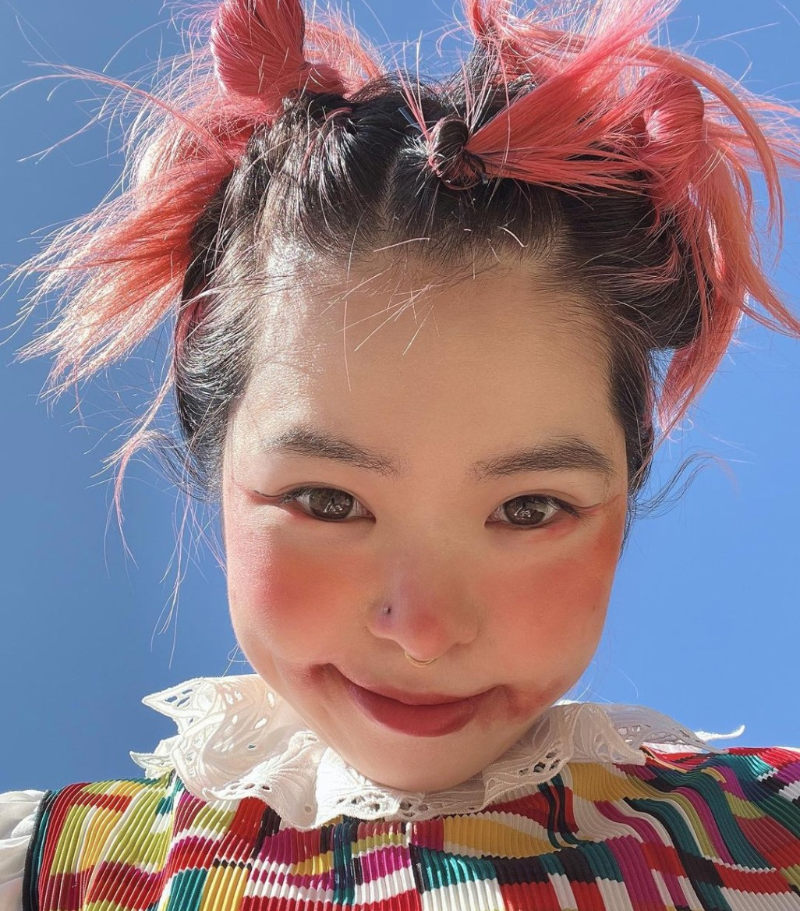
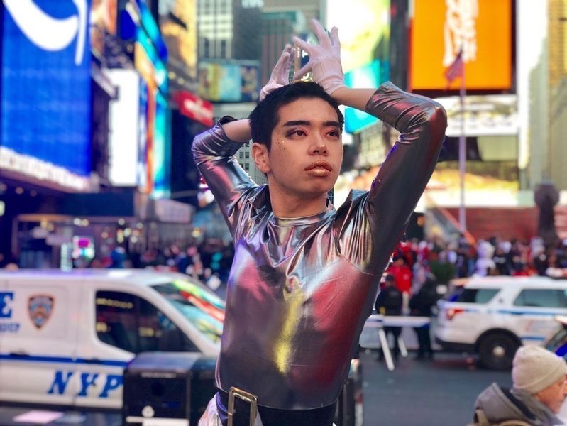
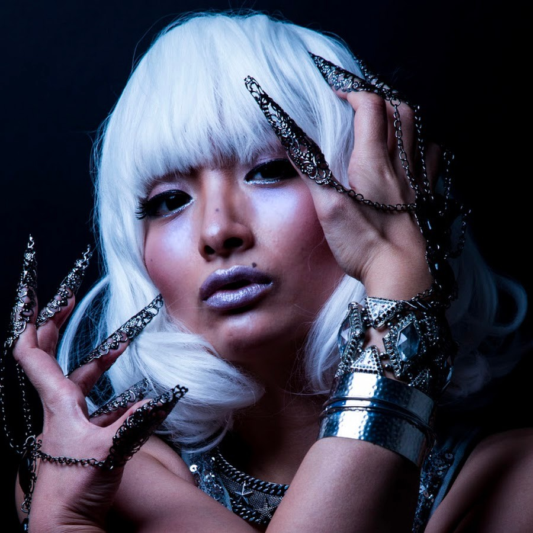
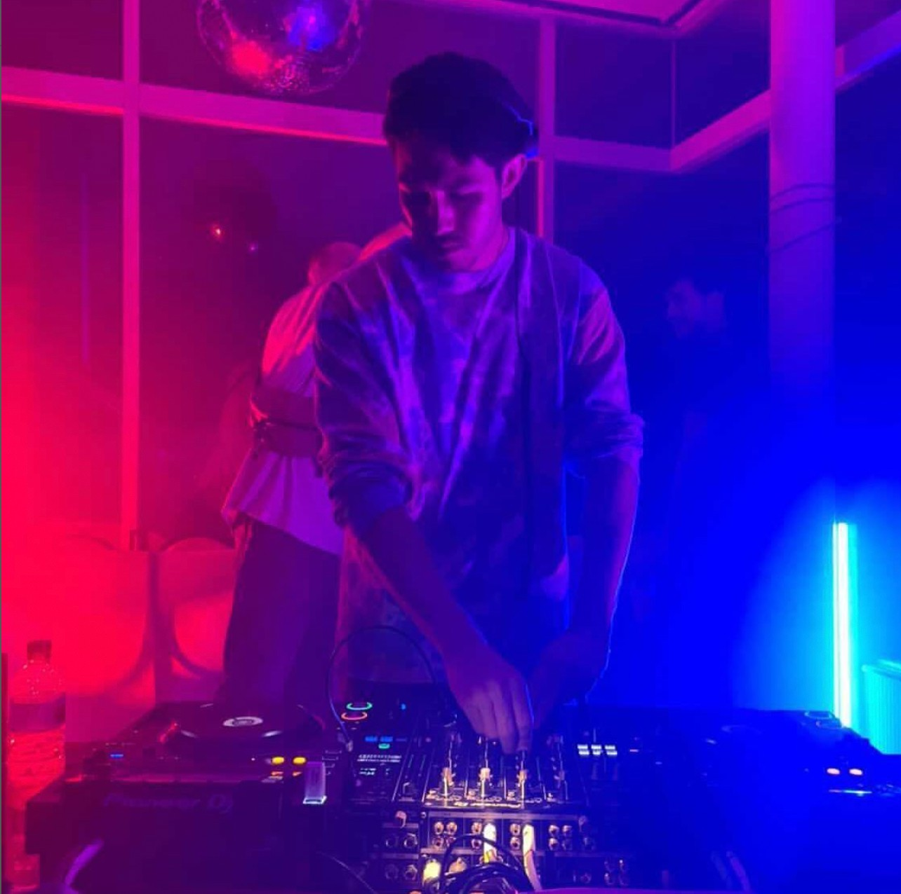
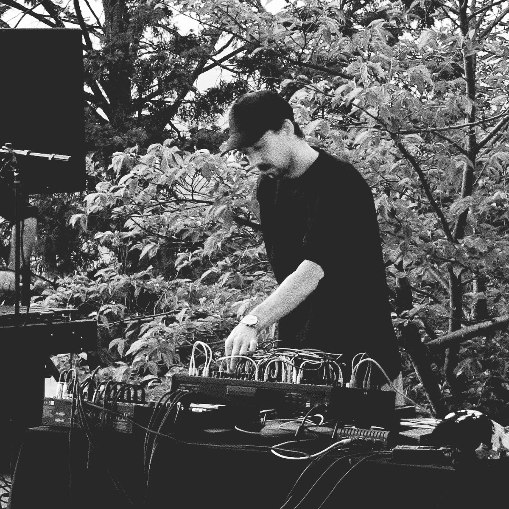

Q(WE)R LAUNCH PARTY / ART GALLERY CLOSING PARTY
Q(WE)R ローンチパーティー/アートギャラリークロージングパーティ
Date: 4/22 (Fri)
Time: 20:00-24:00
Location: TRUNK(HOTEL) Lounge and Gallery
日にち：4月22日（金）
時間：20:00-24:00
場所：TRUNK(HOTEL) ラウンジ＆ギャラリー
Performances by:
パフォーマンス
Organizer: Q(WE)R — International Queer Cultural Festival
Collaboration: TRUNK(HOTEL), Institut francais du Japon / Ambassade de France au Japon, COIL Inc, The Container
Sponsor: Absolut Vodka
主催：Q(WE)R インターナショナル・クィア・カルチャー・フェスティバル
協力：TRUNK(HOTEL)、在日フランス大使館／アンスティチュ・フランセ日本、一般社団法人COIL、The Container
スポンサー: Absolut Vodka
メディアパートナー：Time Out Tokyo
Images: CHIHO ELECTRO, @oyuki_extraterrestrial, HIHA BABYLON PINK LADY, Koppi Mizrahi, Brian Rentz
     